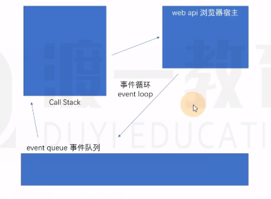

一、执行栈
一个数据结构，用于存放各种函数的执行期上下文，函数调用时，创建执行期上下文，加入到执行栈，函数执行完毕，执行期上下文销毁。
JS引擎永远执行的是执行栈的最顶部。
二、异步函数
事件循环中web API 宿主环境拿的是异步函数，比如setTimeOut的回调函数，setTimeOut自身的执行期上下文在执行栈中
某些函数不会立即执行，需要等到某个时机到达之后才能执行，这样的函数是异步函数，比如事件处理函数。
异步函数的执行机制会被宿主环境控制(浏览器宿主环境的五个线程)
异步函数一定到达事件队列并等到执行栈清空之后再执行，同步函数直接在执行栈执行不会放到队列中
三、浏览器宿主环境的五个线程
宿主环境：JS运行环境称之为宿主环境
JS引擎：负责执行执行栈的最顶部代码
GUI线程：负责渲染页面
事件监听线程：负责监听各种事件
计时线程：负责计时
网络线程：负责网络通信
四、事件队列
当JS引擎发现执行栈内没有任何内容之后，会将事件队列中(先微队列，后宏队列)的第一个函数加入到执行栈中执行
宏任务队列：计时器结束的回调、事件回调、http回调等等绝大部分异步函数进入宏队列
微任务队列：MutationObserver，Promise产生的回调进入微队列(相当于vip通道 只有取完微队列的内容才会取宏队列的内容)
- MutationObserver
const observer = new MutationObserver(function B() { |
五、事件循环
JS引擎对事件队列的取出执行方式，以及与宿主环境的配合，称之为事件循环。
以计时器setTimeOut为例：程序执行时，setTimeOut产生执行时期上下文并放在执行栈中，如果计时线程发现setTimeOut有异步函数，那么计时线程会将异步函数拿到宿主环境进行监听，监听结束之后计时线程将异步函数加入到事件队列中，setTimeOut在执行栈的执行期上下文销毁
当执行栈清空时，JS引擎首先会将微任务中的所有任务依次执行结束，如果没有微任务，则执行宏任务

六、回调和回调函数的缺陷
回调：运行某个函数以实现某个功能的时候，传入一个函数作为参数，当发生某件事的时候，会运行该函数。
本质上，事件和回调并没有本质的区别，只是把函数放置的位置不同而已。
dom.onclick = function(){ |
- 一直以来，该模式都运作良好，直到前端工程越来越复杂，目前，该模式主要面临以下两个问题
回调地狱：某个异步操作需要等待之前的异步操作完成，无论用回调还是事件，都会陷入不断的嵌套
异步之间的联系：某个异步操作要等待多个异步操作的结果，对这种联系的处理，会让代码的复杂度剧增